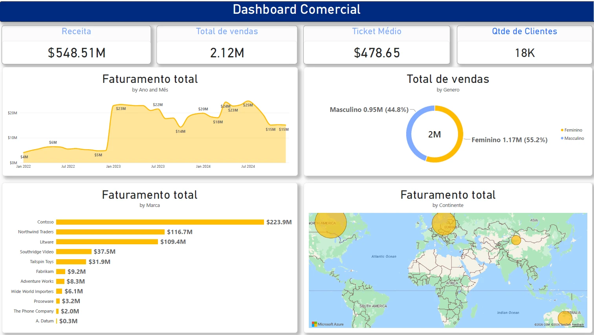

01 / COMERCIALInteligência Comercial
Uma visão integrada de vendas para acompanhar receita, ticket médio, base de clientes e evolução mensal, com cortes por marca, gênero e continente.
↗ Receita, ticket médio e clientes↗ Evolução mensal do faturamento↗ Cortes por marca, gênero e continente
Ver detalhes do projeto →